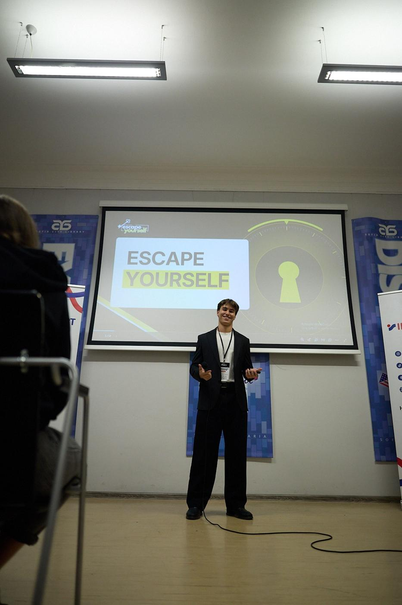

01 / FEATURED PROJECTESCAPE
YOURSELF✳
YOURSELF✳
SOFIAPLOVDIVVARNABURGASVELIKO TARNOVO
NATIONAL COMPETITION / 2026
Escape Yourself/ Co-lead organizer
90 registered teams. Eight finalists. Five cities. As one of two lead organizers, I helped turn an original concept into a national competition — from partner outreach to the final challenge itself.